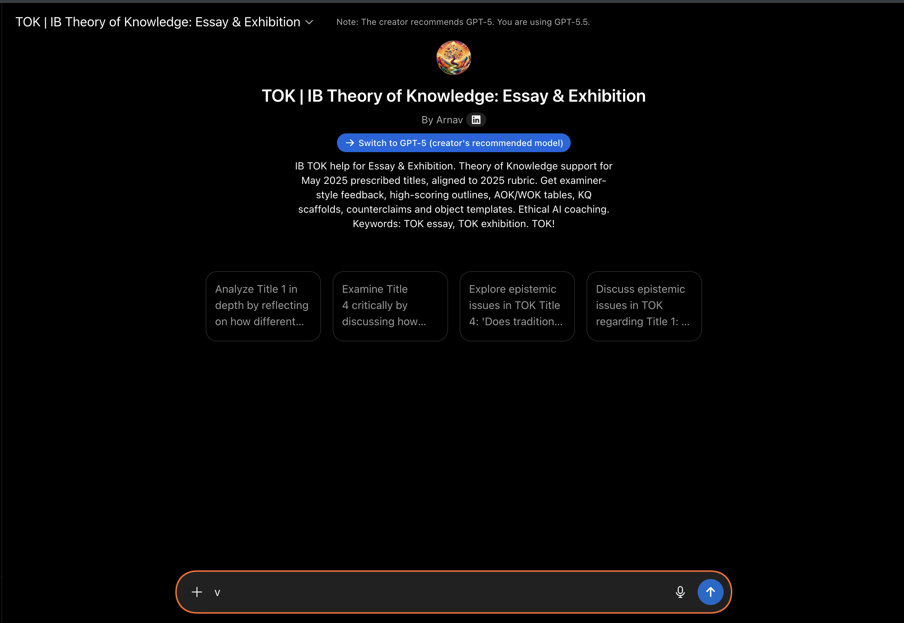

Prescribed Title Analysis
Break down the exact wording of the title and find the real knowledge tension.
IB Theory of Knowledge essay and exhibition help
Use this ChatGPT GPT to plan TOK essays, test exhibition objects, unpack prescribed titles, improve claims and counterclaims, check examples, and get rubric-style feedback.
Recommended for use with GPT-5 when available. Students remain responsible for their own work.

For students working on prescribed titles, AOK choices, essay structure, examples, word count, and revision.
Break down the exact wording of the title and find the real knowledge tension.
Build an argument that is not just one-sided opinion or subject description.
Check whether examples support a knowledge claim or only describe a topic.
Use the GPT to test whether your objects are specific, contextual, and clearly linked to your IA prompt.
Start with your own idea, outline, object, or paragraph. The GPT is for planning and feedback, not final coursework writing.
Help me unpack this TOK prescribed title and identify the main knowledge tension.
Is this TOK essay paragraph descriptive, analytical, or evaluative?
Rank these three TOK exhibition objects from strongest to weakest and explain why.
Does my example actually support my knowledge claim?
Find the weakest part of this TOK essay outline.
TOK essay guide, TOK essay word count, TOK essay structure, TOK essay examples, TOK essay feedback, TOK essay rubric, TOK exhibition objects, IB TOK essay, Theory of Knowledge GPT, ChatGPT TOK, AOK, areas of knowledge, knowledge questions, prescribed titles, claim, counterclaim, and critical evaluation.